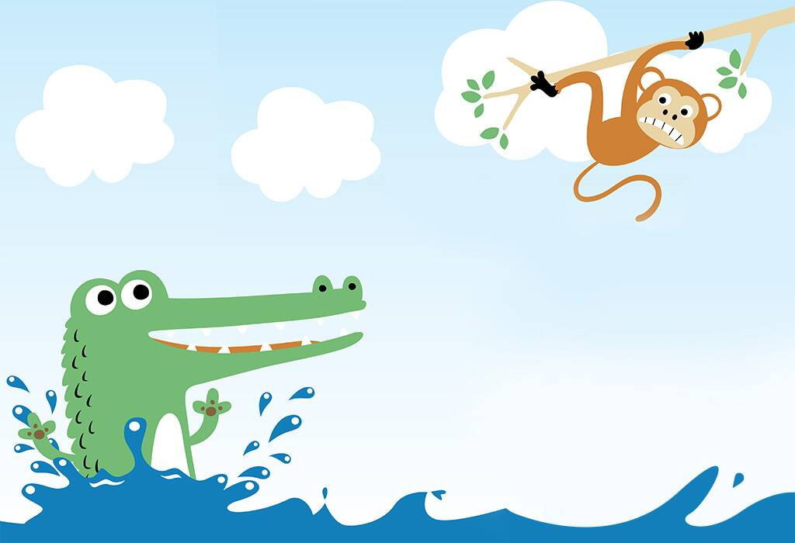

The Monkey and the Crocodile
1. The Monkey and the Crocodile Once upon a time, in a forest, there lived a monkey who resided on a jamoon (berry) tree, which was on the banks of a river. In the same forest, there lived a crocodile and his wife. One day, the crocodile came to the banks of the river and rested under the tree. The kindhearted monkey offered him some fruits. The crocodile came back the next day for more fruits, as he loved them. As days passed by, the crocodile and the monkey became good friends.One day, the monkey sent some fruits for the crocodile’s wife. She ate the fruits and liked them, but was jealous, as she didn’t like her husband spending time with the monkey. She told her husband, “If the fruits are so juicy, I wonder how sweet the monkey’s heart would be. Get me the heart of the monkey.” The crocodile was not willing to kill his friend, but had no choice.He invited the monkey to his house for dinner and that his wife would like to meet him. The monkey was happy, but couldn’t swim, so the crocodile took him on his back. The crocodile was happy that he had tricked the monkey, however, while talking, he blurted out the real reason for taking the monkey home. The clever monkey said, “You should have told me earlier, I left my heart on the tree. We must go back and get it.” The crocodile believed him and took him back to the tree. Thus, the clever monkey saved his life.
Moral of the Story: Choose your company wisely and always have presence of mind.